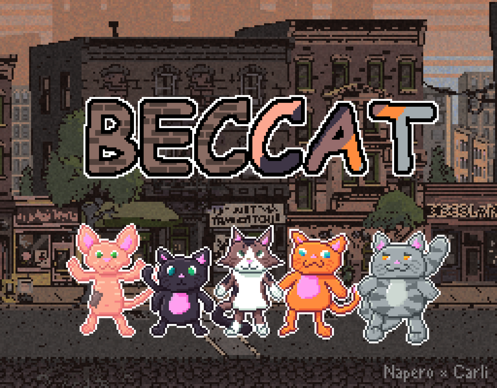

Nuestro Juego: Beccat
En Beccat, estamos desarrollando un emocionante RPG ambientado en un mundo completamente habitado por gatos. El juego tiene lugar en la ciudad de Beccat, una metrópolis inspirada en la ciudad real de Beccar, donde se encuentra nuestro refugio.
Este juego no solo es una forma de entretenimiento, sino que también es una manera de recaudar fondos para nuestro refugio de gatitos. Cada partida jugada ayuda a financiar el cuidado de los gatos que rescatamos.
El estilo del juego es único, con un enfoque en una historia emotiva e inspiradora, donde el jugador tendrá que tomar decisiones importantes que afectarán el destino de los personajes felinos. La narrativa combina aventuras y dilemas morales, mientras los jugadores exploran la ciudad de Beccat, enfrentan desafíos y conocen a personajes entrañables.
El combate será una mezcla entre estrategia y creatividad, permitiendo a los jugadores elegir si prefieren luchar, resolver problemas de forma pacífica o ayudar a otros personajes. Las decisiones que tomes influirán en el curso de la historia, creando una experiencia de juego personalizada.
El juego también incluirá minijuegos interactivos, como misiones de rescate de gatitos y desafíos relacionados con el cuidado y la protección de los gatos, que permitirán a los jugadores aprender más sobre la labor de un refugio.
¡Esperamos que disfrutes de esta increíble aventura y que juntos logremos ayudar a los gatitos de nuestro refugio!
Pronto podrás explorar las calles de la ciudad de Beccat, encontrando personajes únicos, enfrentando retos divertidos y emocionantes, ¡y ayudando a los gatos a vivir una vida mejor!
Suscríbete para recibir actualizaciones sobre el desarrollo del juego y sé de los primeros en probar la versión beta.
Suscribirse